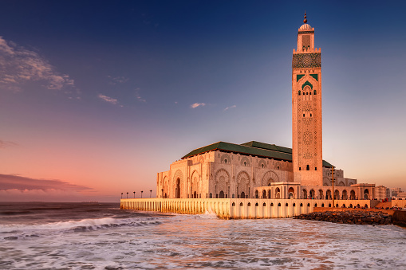

Terre Amazigh et pays d'islam, riche d'histoire , le royaume marocain, à la charnière de l'Afrique et de l'Europe, est le plus occidental des états du Maghreb. Il est une porte d'entrée entre deux mondes et deux cultures. Atlantique et méditerranéen, montagnard et saharien, ses anciennes villes impériales conservent d'âpres et douces splendeurs, plus secrètes qu'il n'y paraît.
